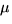
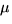

Els plans són l'anàleg a l'espai, formalment, de les rectes al pla, en tant que tenen una dimensió menys. Així podrem un altre cop definir un pla mitjançant un punt de pas i un vector perpendicular al pla, obtenint l'equació implícita del pla:
o equivalentment
També podem obtenir equacions paramètriques d'un pla de manera
anàloga al fet per rectes (però amb dos paràmetres lliures): donats
un punt P i dos vectors (no coincidents)  i
i  ,
els punts del pla que passa per P i conté els dos vectors
donats s'obtenen donant tots els valors reals possibles a dos
paràmetres lliures
,
els punts del pla que passa per P i conté els dos vectors
donats s'obtenen donant tots els valors reals possibles a dos
paràmetres lliures  i 
a la següent expressió:
i 
a la següent expressió:
Observeu que un pla també separa l'espai en dues meitats, i que la
classificació d'un punt respecte d'un pla donat en la forma implícita
és igual que la d'un punt respecte d'una recta al pla, si usem les
equacions en la seva forma vectorial.